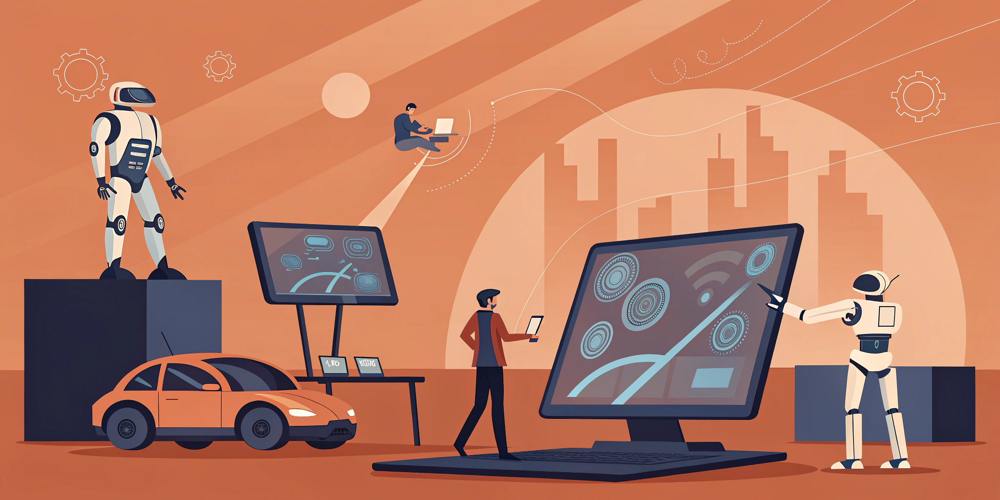

Introduction to DevOps Practices
Modern software development and deployment methodologies

💭A. Warm‑up Questions
- What do you know about software development?
- How do you think software gets from development to users?
- What challenges might developers face when releasing software?
- Have you heard of DevOps before?
- What role do you think automation plays in software development?
📚B. Vocabulary Preview
Match the words with their definitions:
| 1. deployment | a. the process of making software available to users |
| 2. automation | b. using technology to perform tasks without human intervention |
| 3. integration | c. combining different parts into a whole |
| 4. pipeline | d. a series of processes for delivering software |
| 5. monitoring | e. watching and checking something continuously |
📖Reading
Understanding DevOps
1. DevOps is a set of practices that combines software development (Dev) and IT operations (Ops) to shorten the development lifecycle and provide continuous delivery of high-quality software. It emphasizes collaboration, automation, and monitoring throughout the entire software development process.
2. The traditional approach to software development often created silos between development and operations teams. DevOps breaks down these barriers by promoting shared responsibility, communication, and collaboration. This leads to faster, more reliable software deployment and better overall system performance.
3. Key practices in DevOps include continuous integration (CI) and continuous deployment (CD). CI involves automatically testing code changes as they are made, while CD automates the process of releasing software to production. These practices help catch problems early and reduce the risk of deployment failures.
4. Automation is central to DevOps success. By automating repetitive tasks like testing, building, and deploying software, teams can focus on more creative and strategic work. This also reduces human error and ensures consistent, reliable processes across different environments.
5. Monitoring and feedback loops are essential for continuous improvement. DevOps teams use various tools to track application performance, user experience, and system health. This data helps teams identify issues quickly and make informed decisions about future improvements.
🧠Comprehension
- What is the main goal of DevOps?
- How does DevOps improve collaboration between teams?
- What are the benefits of continuous integration and deployment?
- Why is automation important in DevOps?
- How does monitoring help with continuous improvement?
✍️Grammar Review — Technical Vocabulary
1. DevOps (combine) development and operations practices.
2. Automation (reduce) human error in software processes.
3. Teams (use) monitoring tools to track performance.
4. Continuous integration (help) catch problems early.
5. The pipeline (automate) the deployment process.
🔐Answer Keys
Vocabulary Preview
1-a, 2-b, 3-c, 4-d, 5-e
Grammar Review
1. combines, 2. reduces, 3. use, 4. helps, 5. automates